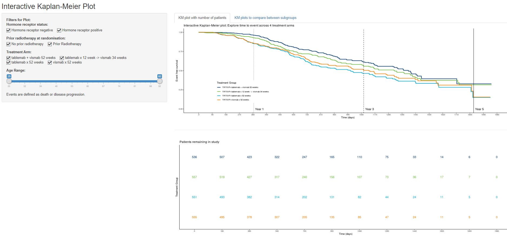
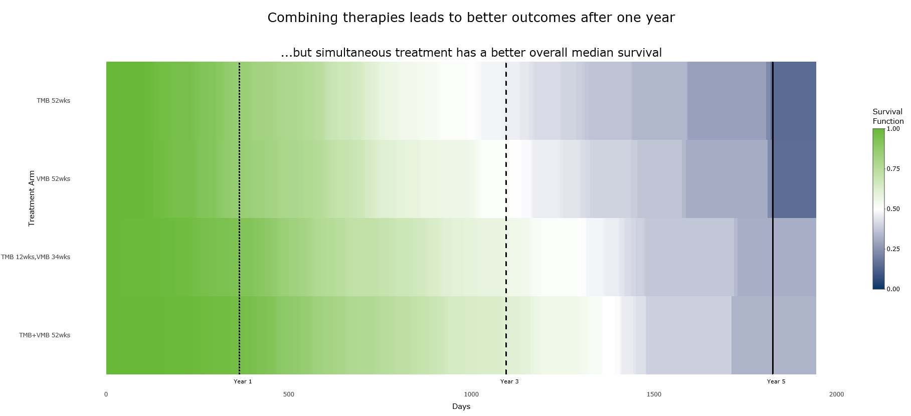

This month’s challenge involved a classic survival dataset example. You can download the dataset here. This simulated example dataset was based on a phase III clinical trial in breast cancer, you can read more about this study here. To summarise, this was a four-arm study, where participants were randomised to receive either one of two monotherapies or one of two combination therapies for 1 year with 4 years post treatment follow-up. The primary outcome was progression free survival and we wanted you to explore different ways of visualising this time-to-event outcome. The dataset contained information that allowed you to explore subgroups, patterns of events and individual patient profiles. More information on the dataset is available here.
We received a variety of submissions in this round including both static and interactive plots and we would like to thank everyone for their contributions. In the webinar members of the VIS SIG discussed the merits of each and picked out key elements they felt would make the ‘ultimate plot’. We summarise the discussions for each submission below.
1.
 On the left this plot displays the proportion of participants that are event free over time by treatment arm and on the right we can see the cumulative number of events over time by treatment arm. Inclusion of both of these figures into one image gives a view of the data which we don’t often see. Inclusion of uncertainty is also not often seen in Kaplan-Meier plots (but has been advocated in this recent publication from Morris et al.) but is extremely useful and the clutter from the overlap of the confidence bands is perhaps less problematic with inclusion of the cumulative plot on the right. The team liked the inclusion of the tables of numbers at risk and the cumulative number of events at the bottom of each plot, this is important information, and we felt this approach didn’t overload or create a cluttered image. We thought there was a nice use of colour.
On the left this plot displays the proportion of participants that are event free over time by treatment arm and on the right we can see the cumulative number of events over time by treatment arm. Inclusion of both of these figures into one image gives a view of the data which we don’t often see. Inclusion of uncertainty is also not often seen in Kaplan-Meier plots (but has been advocated in this recent publication from Morris et al.) but is extremely useful and the clutter from the overlap of the confidence bands is perhaps less problematic with inclusion of the cumulative plot on the right. The team liked the inclusion of the tables of numbers at risk and the cumulative number of events at the bottom of each plot, this is important information, and we felt this approach didn’t overload or create a cluttered image. We thought there was a nice use of colour.
Whilst there is clear labelling of the axis and the inclusion of a common legend ensures clarity this image would benefit from inclusion of some extra details to allow it to stand-alone, for example it would benefit from inclusion of a title. In terms of creating a clearer image we also felt that the dashes to indicate censoring in the image on the left could be omitted given the information on numbers at risk are available at the bottom of the plot.
This is a nice example of an exploratory type plot that statisticians can use to understand the data but if the aim is to communicate a message to stakeholders then we would suggest presenting less information in a simpler graphic.
Get a high resolution picture.
Get the R code.
2.
 This presentation of the data displays the cumulative proportion of participants experiencing an event. It includes a separate plot for each treatment arm and the inclusion of subtitles ensures clarity. This plot is being used to tell a story, which the title guides us towards. Inclusion of a reference line at an important time point is helpful to guide the audience’s attention. Labelling the x and y-axis only once prevents clutter and in combination with the inclusion of the reference lines makes this a clear presentation of the data. This demonstrates an effective use of graduation of saturation and clear annotation.
This presentation of the data displays the cumulative proportion of participants experiencing an event. It includes a separate plot for each treatment arm and the inclusion of subtitles ensures clarity. This plot is being used to tell a story, which the title guides us towards. Inclusion of a reference line at an important time point is helpful to guide the audience’s attention. Labelling the x and y-axis only once prevents clutter and in combination with the inclusion of the reference lines makes this a clear presentation of the data. This demonstrates an effective use of graduation of saturation and clear annotation.
The team noted that there are six colours of grey in the legend but that it was difficult to pick out all six groups in the image. This was because one of the groups is very small. However, it’s tricky to pick out which group this is so we caution potential users to be mindful of this in their own plots.
This is an original, well thought through presentation of survival data which we commend and think would work well where the is a natural ordering of the groups.
Get a high resolution picture.
Get the R code.
3.
 This is a very nice, interactive visual presentation of a growing or developing Kaplan-Meier plot link. This image included some really nice design points that update as the image progresses that can help to tell a story. These included:
This is a very nice, interactive visual presentation of a growing or developing Kaplan-Meier plot link. This image included some really nice design points that update as the image progresses that can help to tell a story. These included:
- The percentages on right y-axis changing as the video plays,
- The inclusion of an additional x-axis at the top of the plot that is populated as it progresses,
- The developing reference lines that follow the data as the plot progresses.
The team felt that this interactive approach could help understanding and interpretation amongst those not so familiar with Kaplan-Meier plots. It’s a potentially useful way to force the viewer to take the entire time period into consideration and not just the final time point when there is often the most uncertainty.
With some additional information on the right y-axis such as estimates of treatment effects this could be a really powerful design choice. A minor point was that it would be nice to include treatment labels with the numbers on the right y-axis so the audience do not have to keep referring back to the legend as the image progresses.
Get a high resolution picture.
Get the sas code.
{kind=link}
4.
 This is a very flexible tool to display Kaplan-Meier plots that explores the subgroup element of the challenge link. It allows the user to change what is presented e.g. displaying information on different treatment groups, different subgroups, or restricting information presented by the age range of participants. Including the legend within the plot and use of grid lines both help audiences to interpret this image.
This is a nice way to present the data for exploratory purposes. It would be nice to include sample sizes and confidence intervals within this tool to represent the uncertainty and minimise the risk of making incorrect conclusions.
Get a high resolution picture.
Get the app code. Get the readme file.
{kind=link}
5.
 The use of a heat map to present survival data is a new idea to the group. At first some of us found it difficult to understand but with some thought it definitely becomes clearer. Given the novelty of this plot it probably needs more information to explain what is going on but could be very useful to help deliver a message to audiences. Inclusion of a clear message in the title and the ordering of the data in a way that the image portrays this really helps i.e. the white stripe representing the median helps show differences between treatment arms.
As well as a ‘big picture’ message from the changes in colour there is also an interactive element to this plot allowing more detailed information to be provided, as the user hovers over different points on the plot information on the survival function at that time point is displayed. Similarly hovering over the reference lines displays further information.
Get a high resolution picture.
Get the app code. Get the html file. Get the readme file.
{kind=link}
6.
 This image displays a Kaplan-Meier plot for each treatment arm with accompanying confidence bands with inclusion of other treatment arms in grey for comparison. This is simple, clear plot exhibiting use of good data visualisation principles. We liked the clear message in the title, inclusion of numbers at risk for each plot rather than in a table and the use of grid lines. The team felt that this plot would be good for communicating a message.
This image displays a Kaplan-Meier plot for each treatment arm with accompanying confidence bands with inclusion of other treatment arms in grey for comparison. This is simple, clear plot exhibiting use of good data visualisation principles. We liked the clear message in the title, inclusion of numbers at risk for each plot rather than in a table and the use of grid lines. The team felt that this plot would be good for communicating a message.
Minor adjustments we recommend are: including a more prominent grid line at 52 weeks, including a legend clearly explaining what the red line and reference bands are and changing the scale from days to weeks or months.